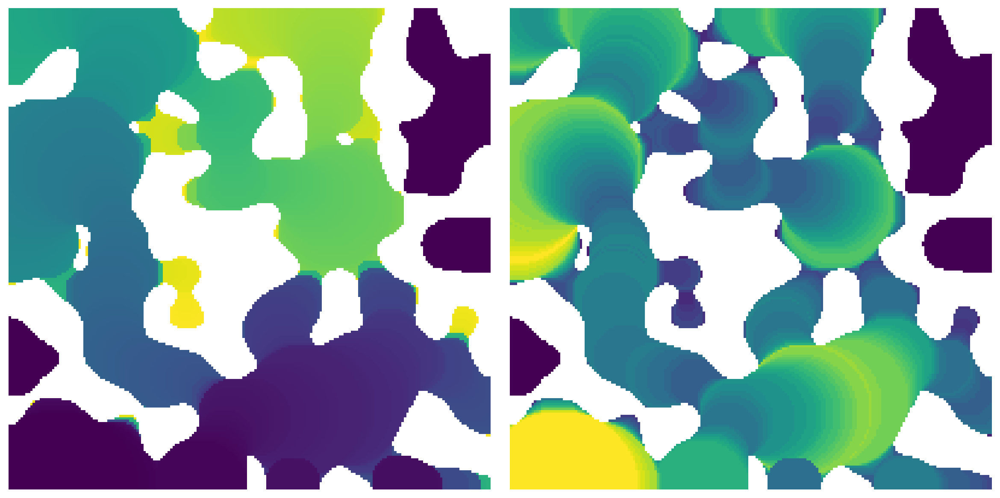
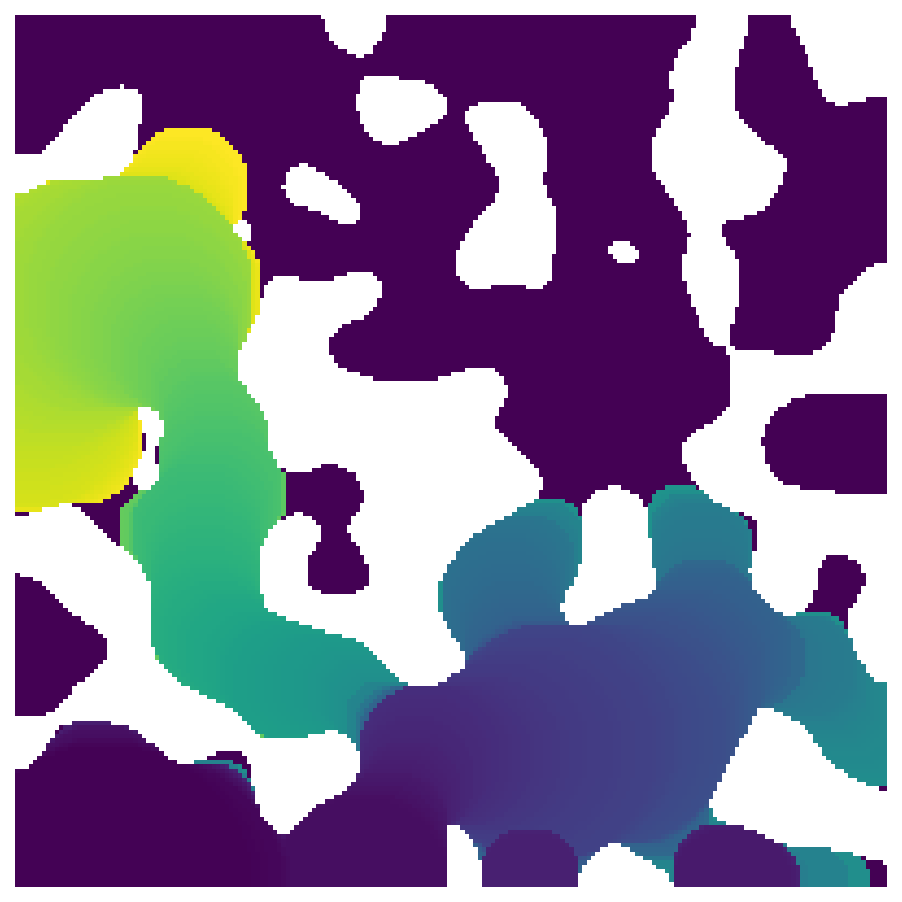

ibip#
Image based invasion percolation algorithm to simulate volume controlled injection of non-wetting fluid into an image
import matplotlib.pyplot as plt
import numpy as np
import porespy as ps
ps.visualization.set_mpl_style()
The arguments and their defaults are:
import inspect
inspect.signature(ps.filters.ibip)
<Signature (im, inlets=None, dt=None, maxiter=10000)>
im#
Can be a 2D or 3D image:
im = ps.generators.blobs(shape=[200, 200], porosity=0.7, blobiness=0.75)
ip = ps.filters.ibip(im=im)
fig, ax = plt.subplots(1, 2, figsize=[12, 6])
ax[0].imshow(ip.inv_sequence/im, origin='lower')
ax[0].axis(False)
ax[1].imshow(ip.inv_sizes/im, origin='lower')
ax[1].axis(False);
/usr/share/miniconda/envs/test/lib/python3.8/site-packages/IPython/core/pylabtools.py:152: UserWarning: This figure includes Axes that are not compatible with tight_layout, so results might be incorrect.
fig.canvas.print_figure(bytes_io, **kw)
The function results a Results object with an image containing the invasion sequence of each voxel (left) and the invasion size of each voxel (right). These can be used to generate a capillary pressure curve.
inlets#
By default invasion begins from all sides, but the inlets can be specified.
inlets = np.zeros_like(im)
inlets[0, ...] = True
ip = ps.filters.ibip(im=im, inlets=inlets)
fig, ax = plt.subplots(1, 2, figsize=[12, 6])
ax[0].imshow(ip.inv_sequence/im, origin='lower')
ax[0].axis(False)
ax[1].imshow(ip.inv_sizes/im, origin='lower')
ax[1].axis(False);

maxiter#
The maximum number of iterations to run before stopping, mostly to prevent the algorithm from stalling (or appearing to stall) on huge images.
ip = ps.filters.ibip(im=im, inlets=inlets, maxiter=500)
fig, ax = plt.subplots(1, 1, figsize=[6, 6])
ax.imshow(ip.inv_sequence/im, origin='lower')
ax.axis(False);
